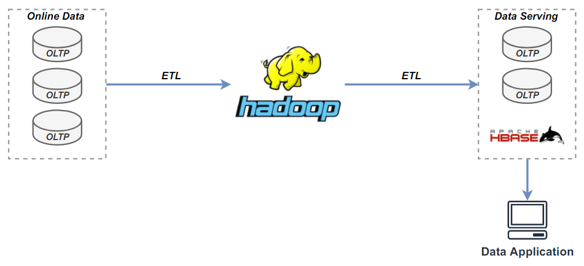
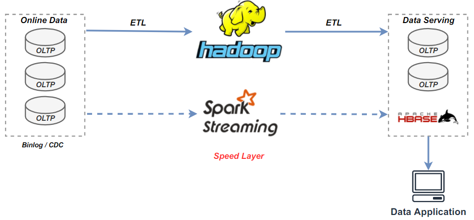
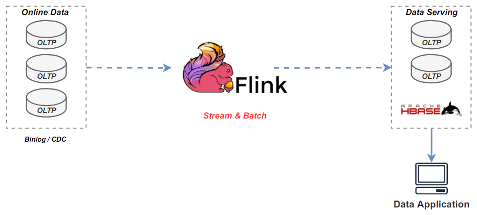
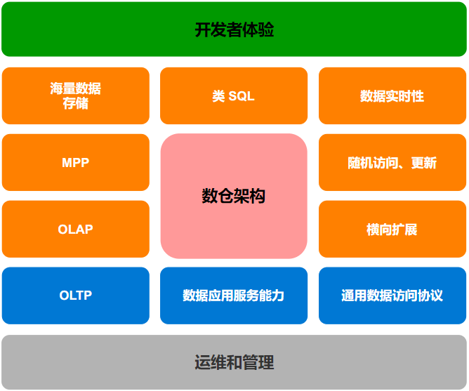
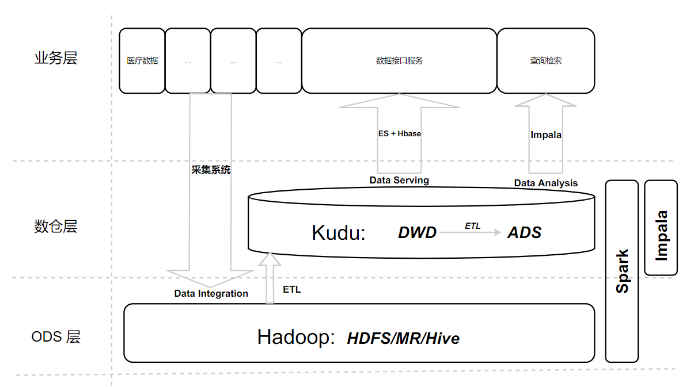
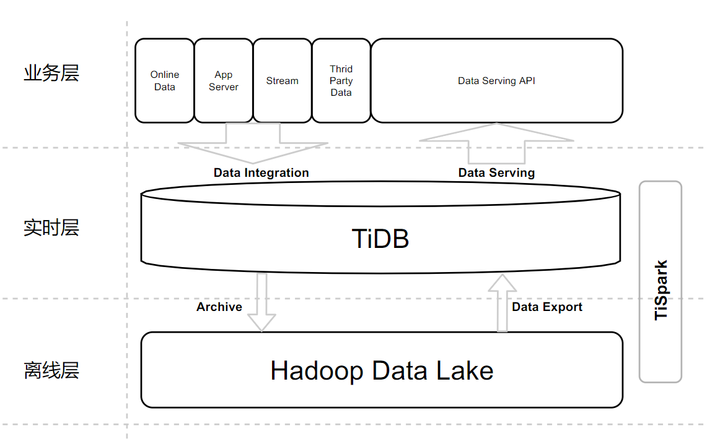

构建实时湖仓
By Siu 2021/7/24
最近一直在思考由数据采集为起始，一直到数据治理、数据服务链路的数据湖解决方案，同时也看到了业界、社区的一些新的思路如 Hudi、 Icebreg、NewSQL，结合目前公司的的大数据架构、数据服务业务做一些更深入的分析和思考。
1 大数据，它解决了什么问题？
从数据管理技术的演进历程上看，从上世纪70年代第一个关系型数据库 System R 出现，到 80、90年代，涌现了大量商业关系型数据库，Oracle、IBM DB2、微软 SQL Server，以及现在比较流行的开源数据库 MySQL、PostgreSQL。
到了 2000 年初期，互联网时代到来，数据开始指数增长，传统关系型数据库无法存储、处理如此庞大的数据。2004 年，Google 的三大论文，GFS（分布文件存储）、MR（计算）、BigTable（数据架构），依此为指导 Hadoop 生态开始繁荣发展， 大家普遍认识到单一的数据库产品已经无法满足用户的需求，数据处理领域的技术方向开始分化：
-
OLTP 领域依然被传统关系型数据库占据（SQL）
-
OLAP 领域则成为了大数据技术的主战场（NOSQL）
2010s 早期，随着硬件的发展，内存、硬盘、带宽、网络延时等有了极大提升，数据库的架构迎来变革。 以 Google Spanner 代表的分布式数据库开始大规模投入生产。这时期 OLTP 和 OLAP 的概念逐渐开始模糊，HTAP 的概念应运而生，将 OLTP 和 OLAP 混合在一起，在同一个数据库上处理这两种负载，回到了数据库产品的初衷，NewSQL 时代即将到来。
现在我们再来看下这个问题”大数据，它解决了什么问题？“
- 传统数据库可以有限的解决 OLTP 和 OLAP 负载，但当数据庞大时，AP 问题无法解决
- 大数据致力且擅长解决数据规模庞大的 OLAP 场景，特别是 Hadoop 的数仓架构逐渐成为主流（现在看，可称为传统数仓架构）
这里我们关注到两个要点：
-
**1、数仓 **
-
2、NewSQL(HTAP)
下面先看下传统数仓架构的演进。
2 传统数仓架构的演进
数据仓库的概念早在上世纪90年代就已经被提出，但随着Hadoop生态的流行，数仓开始有了实际且有力的载体。下面用几个简单的架构表达各个阶段的演进。
2.1 离线数仓（T+1）
图 2-1，数仓架构-离线数仓

2.2 Lambda 实时数仓(T+nm)
图 2-2，数仓架构-lambda实时数仓

2.3 Kappa 实时数仓(T+0)
图 2-3，数仓架构-kappa实时数仓

数据实时性，一直都是数仓架构演进的重要目标，也是用户的重要需求。
3 数仓架构的关注点
图 3-1，数仓架构的关注点

4 当前架构
在传统数仓构建演进的过程中，业界一直在围绕两大主要目标：
- 数据实时性
- 海量数据处理能力
4.1 当前架构
图 4-1，大数据架构

4.2 当前架构解决的问题
表 4-1，大数据组件解决问题
| 组件 | 解决的问题 | 备注 | 归类 |
|---|---|---|---|
| HDFS | 分布式文件存储 | 存储 | |
| MapReduce | 批处理计算 | 计算 | |
| Hive | 类SQL 的计算（MR） | 计算 | |
| Hbase | BigTable 的开源实现，提供快速随机访问的数据的能力 | 依赖 MR 的计算能力，依托 HDFS 作为存储 | 存储、数据库 |
| Kudu | HDFS<-Kudu->Hbase，拥有一些OLAP和OLTP的特性，低延迟随机访问、逐行插入、更新和快速分析，中间层、集市层 | 依赖 Spark 、Impala 计算 | 存储，数据库 |
| Spark | 处理数据（kudu），Spark Streaming 实时处理 | 计算 | |
| Impala | 交互式查询，解决hive的查询时延问题（目前用于公司的查询检索产品），MPP 计算分析 | 采用 HDFS 和 HBase 存储数据 | 计算，MPP |
| ES | 对外服务接口 | 计算、存储 |
4.3 当前架构存在的问题
-
目前并未演进到 lambda、kappa 架构，数据延时高
-
数仓分层经过 ETL 逻辑复杂，一份数据存储于多种介质，存储、时间成本过高
-
数据链路长
-
技术栈复杂
-
数据开发技术成本大：尤其是数据开发工程师、数据分析工程师
5 我们需要解决的几大问题
我们要解决的几大问题：
1、业务在线层：
- 数据汇聚：在线业务的数据CDC或批量采集同步（医院的交易型系统数据）、海量存储、高并发写、行更新
- 数据服务：OLTP、海量存储（PB）
2、离线数仓层（数据湖）：海量存储（10PB+）、计算（批处理）
3、实时数仓层：OLAP、MPP、海量存储（PB）、计算（流处理）
下面我们看下，上文关注的第二个重点 NewSQL(HTAP) 会给数仓建设带来什么样的解决思路。
6 NewSQL 的实时数仓架构
6.1 MySQL 作为数仓有什么问题？
上面提到传统数据库具备有限的解决 OLTP 和 OLAP 的负载，但并没有深入讨论，传统关系型数据库的不足；这里假设一下用 MySQL 作为我们的数据仓库架构核心会面临哪些问题（ODS、DWD、DWS、ADS）。
- 无法满足海量数据的存储（ODS、DWD、DWS）
- 无法满足海量数据的分析需求（DWD、DWS）
- 无法满足大规模并行计算的需求（ODS、DWD）
- 无法满足横向扩展的需求（ODS、DWD、DWS）
6.2 TiDB 能力对比
TiDB 是一个开源的 NewSQL 数据库，支持混合交易和分析处理 （HTAP） 工作负载。它兼容 MySQL，可水平扩展、具有强一致性、分布式和高可用性的特点。
表 6-1，TiDB 能力对比
| 能力 | 现有方案 | TiDB |
|---|---|---|
| 随机访问的数据库（二级索引） | 是，hbase + phoenix | 是 |
| 随机访问、更新 | 是，kudu | 是 |
| 海量存储 | 是，hdfs | 是 + hdfs |
| MPP 能力 | 是，impala | 是，Tiflash |
| 交互查询 | 是，impala | 是 |
| 类 sql 查询 | 是，impala、hive | 是 |
| 批处理计算能力 | 是，MR、Spark | 是，TiSpark |
| 数据应用层点查能力 | 是，ES + hbase | 是 |
| 通用的数据访问协议 | 否 | 是，兼容 MySQL 5.7 |
| 高级数据库的权限模型 | 否 | 是，mysql 的权限模型 |
| 标准SQL 查询能力 | 否 | 是，SQL |
| 实时数仓 | 否，未来可演进 | 是 |
| AP、TP 负载隔离 | 否 | 是，TiFlash |
6.3 NewSQL 产品对比
待补充，StarRocks 为不同的产品类型。
表 6-2，NewSQL 产品横向对比
| cockroachdb | OceanBase | TiDB | StarRocks（略） | |
|---|---|---|---|---|
| 类型 | 分布式/NewSQL/HTAP | 分布式/NewSQL/HTAP | 分布式/NewSQL/HTAP | 分布式/MPP |
| 定位 | The most highly evolved database on the planet. Born in the Cloud. Architected to Scale and Survive. | 分布式关系数据库 | 实时 HTAP 数据库 | 极速MPP数据库 |
| 开源 | 2014，MIT Star 21.1k Contributions 512 | 2021，MulanPubL-2.0 Star 3.3k Contributions 70 | 2014，Apache License 2.0 Star 29.1k Contributions 626 | 2021，Elastic License 2.0 Star 1.2k Contributions 35 |
| 文档 | [英文](CockroachDB Docs) | 中文 | 中/英文 | https://docs.starrocks.com/zh-cn/main/introduction/StarRocks_intro |
| 数据量级 | PB | PB，单表万亿，1500 节点 | PB，单表千亿，500 节点 | 10PB |
| ACID | 是 | 是 | 是 | 部分 |
| SQL | 兼容 postgresql | 兼容 mysql 5.6，兼容 oracle（企业版） | 兼容 mysql 5.7 | 兼容 mysql |
| 安全 | RBAC；LDAP | RBAC | RBAC，表级 | RBAC，表级；LDAP |
| 多租户 | 是，资源隔离 | |||
| 分布式事务 | 乐观事务模型 | 乐观事务模型 | ||
| KV存储引擎 | RocksDB | RocksDB | ||
| 数据一致性/共识算法 | Raft | Paxos | Raft | Paxos |
| 部署 | tiup | 企业版有部署管理工具 | ||
| 监控 | tidb dashboard,grafana | |||
| 数据迁移 | ||||
| 总结 | AP 在 Tiflash 加持下会比 oceanbase 性能好， |
- TP：ob>tidb/cr>sr
- AP：sr>tidb>ob/cr
- 开源和生态：tidb>cr/sr/ob
6.4 TiDB 的应用场景
TiDB 的应用案例很多，有很多互联网、金融行业的成功实践案例：
丰巢、美团、北京银行、光大银行、中国平安、小红书，360、陆金所、中通、58、汽车之家、中国电信、国家电网
-
替换 Mysql 作为 TP库，带来 AP 能力，交易分析一体化
- [丰巢]([精选实践]TiDB 在丰巢核心支付平台百亿级数据的深度实践 - 技术文章 / 用户实践 - AskTUG)：核心支付系统，百亿规模数据
- [美团](客户案例 | PingCAP)：数百个 TiDB 集群，1700 多个物理节点。单集群最大 40 多个节点，单表记录最大上千亿条；
- 中国银行：支撑域、监控系统
- [光大银行](客户案例 | PingCAP)：理财业务、2000万笔/小时、5000万笔/日，40TB
- 北京银行：支付清算平台、银联无卡快捷支付平台、金融服务互联平台、网贷业务平台核心金融业务场景
- 中国平安、陆金所
-
实时数仓方案
- 浙商银行：实时数仓、数据量等未知
- [小红书](客户案例 | PingCAP)：实时数据服务，数据产生的速率峰值 QPS 达到三四万，单表一天写入 5 亿左右的数据
- [中通](客户案例 | PingCAP):双十一大促中，TiDB 同时支撑线上 OLTP 和 OLAP 的业务， QPS 峰值在 12 万+，支持百亿级的插入和更新。
-
作为组件的替代方案
- hbase 用 TiKV
- MPP 场景应用
6.5 构建数据湖和实时数仓
6.5.1 总体架构
图 6-1，整体架构

用户的数据可以通过各种各样的方式写进 TiDB，在 TiDB 里面在进行一些 ETL 之类的操作然后写入到离线计算中，最后再将结果反馈到 TiDB。TiDB 可以直接对外提供实时数据分析的服务，这也是非常流行的架构之一。
6.5.2 技术架构
图 6-2，技术架构

- 四个场景
- 数据汇聚
- CDC
- 批流一体（Flink SQL + UDF），入湖入仓
- 异构数据海量存储
治理系统数据、标化系统维表数据hive metadata（调度监控、资源监控的场景）
- 数据服务
- 接口点查
事务型交易- 数据导入/导出
- 数据分析
- 数仓多维分析、关联分析（MPP/TiFlash）
- 湖仓数据关联分析（TiSpark/Spark）
- Ad-hoc ，大数据交互查询（Trino+Iceberg，MPP/TiFlash）
- 跨源级联查询（Trino）
- 数据共享交换
- 湖仓数据交换（TiSpark/Spark）
跨域的数据交换（ADS，TiBinlog）跨域的数据发布/订阅（ADS，TiCDC+MQ+多租户）
- 数据汇聚
- 三层架构
- 业务层
- CDC + MQ + 批流一体（Flink SQL/UDF），实时处理入湖入仓
- 标准服务接入方式 SQL/JDBC，可负载交易系统
- 提供数据服务、数据分析、数据共享交换标准的接口/服务
- 实时数仓
- 分析和点查（HTAP）
- HTAP 负载隔离，按需扩展
- PB 级数据负载能力
- 数据权限/访问控制（RBAC）
- 数据湖
- 统一存储、异构海量存储（结构/半结构/非结构化数据）
具备湖仓一体的能力
- 业务层
- 主要技术栈：
- 存储：HDFS、TiKV/TiFlash(RocksDB)
- 计算：Flink、Spark、MR/Tez
- SQL/MPP 引擎：Trino
- 其它：
- iceberg（表格式）、Ranger（权限）、ShardingSphere（脱敏加密）
- 降本方案
AIT（all-in-tidb，or in NewSQL）AISR （all-in-starrocks）
6.5.3 业务架构（待更新）
图 6-3，业务架构
6.5.4 收益
| 序号 | 收益 |
|---|---|
| 1 | 数据实时性高 |
| 2 | 技术栈统一，可扩展性强 |
| 3 | 数据业务线清晰： - 数据开发：采集（CDC）、实时处理（Flink）、批处理（Spark） - 数仓建设：围绕 TiDB 构建数据服务 - 数据分析： MPP 引擎、TiSpark/Spark 构建分析能力 |
| 4 | 数据内治理：统一的数据仓库，hive meta+治理交易数据/标化维表数据，一定程度达到”数据内治理“ - 库、表、字段元信息 - 表：表行数、表大小、行平均大小、创建时间、更新时间 |
| 5 | 数据安全 - 数仓：数据权限控制（RBAC，库、表） - 数仓：数据脱敏、数据加密（中间件提供支持） - |
| 6 | 开发体验： - 数据访问方式 SQL，Mysql 协议 - 基于 SQL 数据分析 - 丰富的 SQL Client |
| 7 | 节约成本：覆盖大部分场景，OLTP（100%）、OLAP（>80%）；节约存储、计算、带宽 |
| 8 | 运维和管理： - Ambari - 扩容工具 TiUP - 备份与恢复工具 BR - 监控：TiDB Dashboard 集群关键指标：SQL 分析/慢日志，实例、主机、Region 监控等 |
6.5 POC 计划
待补充
6.5.1 整体目标
- 数据实时：10 mins
- 数据仓库：分层统一存储，提供大部分数据服务能力（现有100%，未来80% 场景）
- 数据内治理：满足基础元数据治理的需求（数据仓库）
- 数据安全
- 数据仓库中实现基于角色的权限控制（库、表）
- 数据仓库中实现数据脱敏、加密（透明中间件）
- 数据湖：海量存储数据（结构化、半结构化、非结构化）和数仓模型类数据、离线分析、湖仓数据交换
问题：
- 批量写的性能问题是否存在？如果存在如何规避
- 大字段的存储限制（6M-120M）
宽表限制：默认为 1017，最大可调至 4096技术的掌握能力
REF
-
Kudu
- kudu现在拥有一些OLAP和OLTP的特性，但是缺少对跨行的原子性、一致性、隔离性、持久性事务的支持
- kudu仅仅是一个存储层，因此它并不处理数据，而是依赖于外部的处理引擎比如Imapala、Spark等来处理。kudu把数据按照自己的列存储格式存储在底层的Linux文件系统，不像HBase那样，Kudu不以任何方式使用HDFS。
-
Impala 大数据生态的MPP
-
TiDB
-
真正意义上的 HTAP 数据库；
-
互相隔离的 OLAP 和 OLTP 负载；
-
分析友好，强实时性、强一致性的列存；
-
-
DW数据分层，由下到上为DWD，DWB，DWS。
-
DWD：data warehouse details 细节数据层，是业务层与数据仓库的隔离层。主要对ODS数据层做一些
数据清洗和规范化
的操作。
- 数据清洗：去除空值、脏数据、超过极限范围的
-
DWB：data warehouse base 数据基础层，存储的是客观数据，一般用作中间层，可以认为是大量指标的数据层。
-
DWS：data warehouse service 数据服务层，基于DWB上的基础数据，整合汇总成分析某一个主题域的服务数据层，一般是宽表。用于提供后续的业务查询，OLAP分析，数据分发等。
- 用户行为，轻度聚合
- 主要对ODS/DWD层数据做一些轻度的汇总。
-
ADS： application data store ，数据应用层
-
-
support pulsar's sink. by cocotyty · Pull Request #751 · pingcap/ticdc (github.com)
本页编辑 @gongshiwen